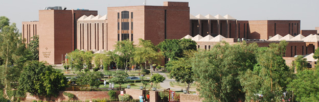
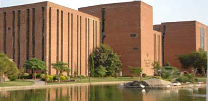

Shaukat Khanum Memorial Cancer Hospital and Research Centre (SKMCH&RC) is a state-of-the-art cancer centre located in Lahore, Pakistan. It is a project of the Shaukat Khanum Memorial Trust, which is a charitable organization established under the Societies Registration Act XXI of 1860 of Pakistan. The institution is the brainchild of Pakistani cricket superstar, Imran Khan. The inspiration came after the death of his mother, Mrs. Shaukat Khanum, from cancer
Imran Khan made a nation-wide appeal for the collection of funds from a match between Pakistan and India on November 10, 1989 at Gaddafi Stadium, Lahore which raised Rs. 2,902,600. This was followed by a series of more than 50 successful fund raisers held throughout the world. Pakistan's win under Imran's captaincy in the 1992 cricket world cup in Melbourne helped fundraising efforts. He was able to collect one and a half million pounds in just six weeks after the World Cup when the same amount had taken 2 years to collect earlier. He donated his entire prize money of 85,000 pounds for the project. In 1994 when the project required more financing for the ongoing construction, Imran Khan launched a mass contact campaign in which he toured 27 cities in the country and collected Rs. 120 million. During the entire campaign for the construction of the hospital, over a million individual donors from ordinary citizens to the rich and famous pitched in. Everything from cash to jewelry and valuables was donated.
